Biografi
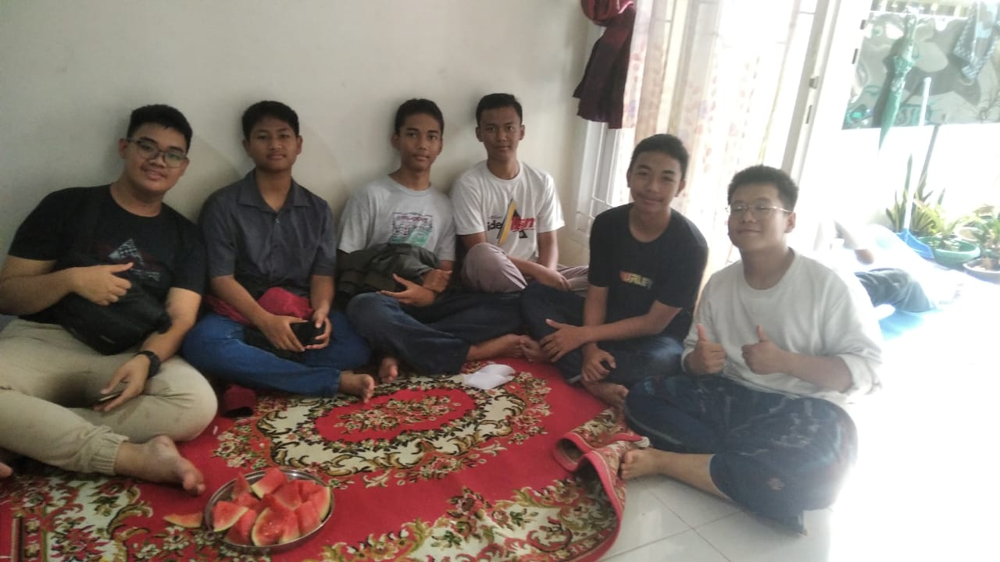
Saya lahir pada tanggal 28 September 2008 di Jakarta, selama masa kecil saya, saya tumbuh di Kota Bogor.
Pada tahun 2012, saya bersekolah di TK Kartini di Pandeglang, kemudian melanjutkan di TK Kartika hingga SDN 04 Pandeglang,
pada tahun 2016 saya pindah kembali ke Kota Bogor dan melanjutkan pendidikan di SD Alam Ciomas hingga 2021. Setelah itu dan
bersekolah di SMP Islam Ibnu Hajar hingga 2024
Mengenal koding
Awalnya saya mengenal koding pada tahun 2021 di SMP Islam Ibnu Hajar oleh Pak Rizki,
waktu itu mengenal tentang konsep algoritme dan scratch, namun tidak dilanjutkan dan
akhirnya sempat menjadi mapel informatika hingga 2023. Pada tahun 2024 ini setelah saya
masuk SMK Wikrama, saya mengambil mapel PPLG dan mempelajari ilmu web dasar html dan css,
akhirnya saya dapat memahami web dasar walaupun tidak terlalu jago di bidang css.
Sertifikat yang saya miliki


Railfanning
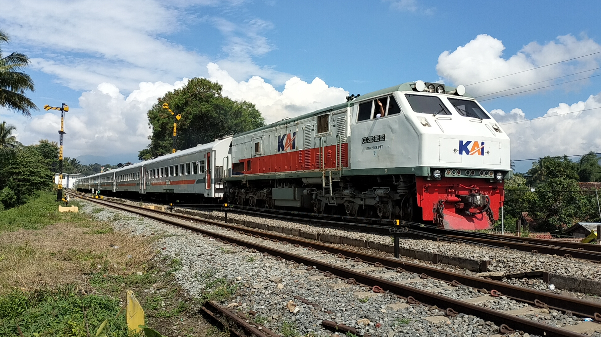
pada tahun 2018 saya mencobakan diri untuk menjadi seorang Railfans dan pada tahun 2020 Subscriber saya ada sekitar 80 orang,
awalnya konten youtube saya adalah konten hunting dan me-review perkiraan update bussid, pada Juli 2020
karena waktu itu masih kecil/sebelum remaja tepatnya usia 12 tahun, saya ingin mengganti channel youtube saya
menjadi RailSpotter TV, akan tetapi akun saya dinonaktifkan permanen karena waktu itu saya mengganti foto profil dan nama saya di laptop,
keesokan harinya saya bisa membuat ulang akun kedua saya, dan saat ini, Subscriber Saya bertambah lebih banyak dari akun sebelumnya
yang dinonaktifkan permanen yaitu sekitar 753 Subscriber.
Awalnya saya hunting kereta api di sekitar kota Bogor saja, dan dilokasi JPL 04 Stasiun Bogor Paledang. Akan tetapi titik lokasi hunting
keretanya mulai ke wilayah lainnya seperti Jl. R.E. Martadinata, Pasar Anyar dan Kedungbadak, bila ada acara keluarga, saya bisa hunting KA
di Bandung hingga Cibatu.
Hasil Observasi kelompok IPS PIPAS
Tugas observasi ini merupakan bagian dari tugas kelompok 5 SOS PIPAS, sebuah observasi sosial dalam mengamati kenakalan remaja di sekolah
dengan tema "Bahaya Merokok".
Anggota Kelompok
-
Duta Suksesi Faturahman
-
Queentana Alea Hasanah
-
Darryl Shaquiele Herniwan
-
Chelsea Indra Puntadewa
-
Muhammad Railfans
-
Fajer Ibrahim
Tujuan observasi
Observasi pada tema ini bertujuan untuk
-
Mengetahui data peserta didik SMK Wikrama / Warga sekitar yang merokok.
-
Melakukan sosialisasi pencegahan merokok dan bahaya merokok.
-
Mengetahui dampak langsung merokok terhadap kesehatan dan lingkungan sekitar.
Hasil Observasi awal
Hasil observasi awal menunjukkan bahwa masih banyak warga yang merokok dan sebagian besar perokok mengeluhkan masalah pernapasan
seperti batuk dan sesak napas. Selain itu, banyak ditemukan sampah puntung rokok berserakan di lingkungan sekitar, yang dapat
mencemari tanah dan air.
Pembahasan
Temuan ini menunjukkan bahwa merokok dapat menyebabkan berbagai penyakit seperti paru-paru, jantung, dan kanker. Sampah puntung rokok
juga mengandung zat berbahaya yang dapat merusak lingkungan. Asap yang dihasilkan rokok bisa merugikan warga yang menghisap asap rokok.
Analisa data
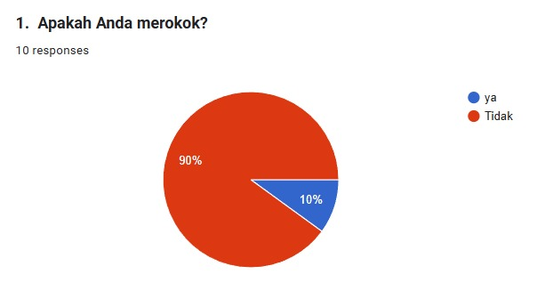
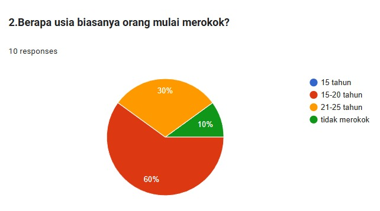
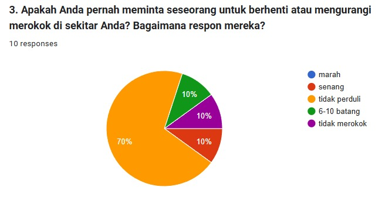
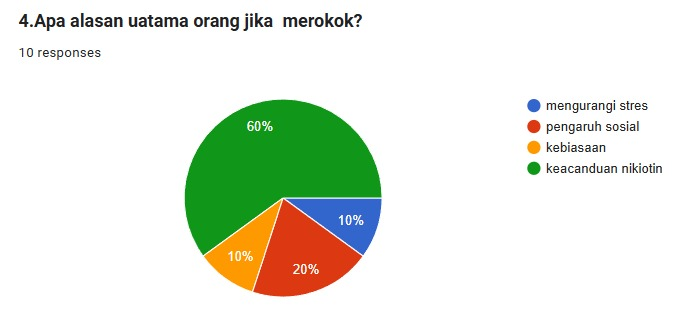
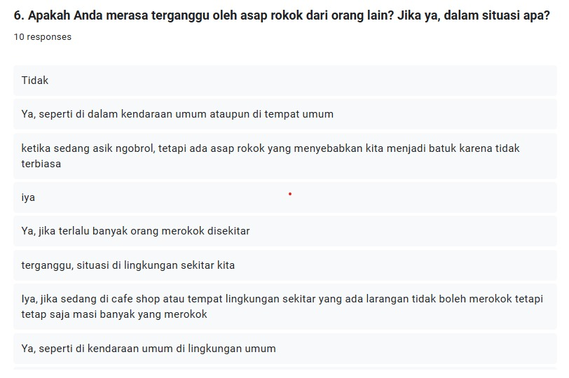
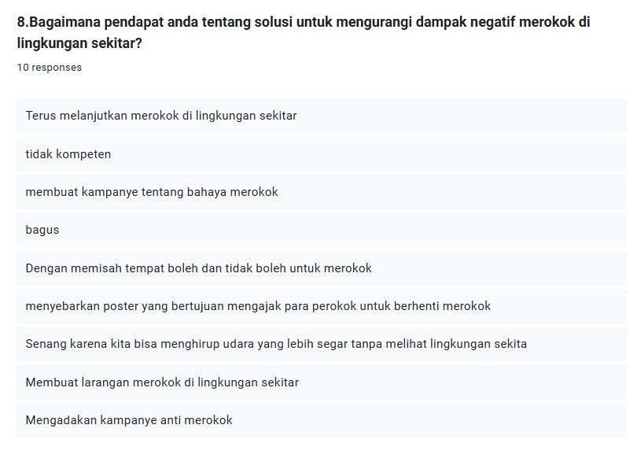
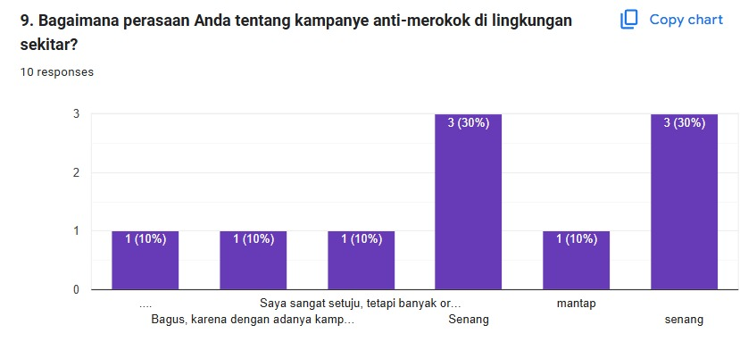
Tindakan Pencegahan
-
Berhenti merokok
-
Mengjindari tempat-tempat merokok
-
Memasang peringatan tentang bahaya dari merokok
-
Gunakan teknik relaksasi alternatif
-
Buatlah lingkungan bebas asap rokok
-
Jaga dan selalu memperhatikan kesehatan kita
-
Cari dukungan dari ahli kesehatan kita
-
Pahami resiko paparan pasif
Hasil pengamatan
Jadi seperti yang saya amati di sekitar masih banyak orang yang cuek dan acuh terhadap bahaya dari rokok ini, baik bahaya bagi dirinya sendiri ataupun bahaya untuk
orang - orang di sekitarnya. Bagi orang yang merokok mungkin tidak terlalu merasakan efek dari perbuatannya tapi mungkin bagi orang – orang disekitarnya itu bisa sangat mengganggu.
Revolusi Industri
Infografis ini merupakan Proyek mata pelajaran Sejarah tentang Revolusi Industri
Sejarah Singkat Revolusi Industri
Dilansir Encyclopaedia Britannica, revolusi industri dalam sejarah modern merupakan proses perubahan dari ekonomi agraris dan kerajinan, ke industri serta manufakur mesin. Proses revolusi
industri pertama kali terjadi pada abad ke-18 di Inggris atau tahun 1760-1840. Saat itu, terjadi peralihan dalam penggunaan tenaga pada industri tektil. Manusia sebelumnya memakai tenaga
hewan, tapi selanjutnya, manusia mulai beralih menggunakan mesin. Revolusi industri lantas meluas ke berbagai negara di Eropa Barat, Amerika Utara, Jepang, dan di belahan dunia lainnya.
"Revolusi Industri: Sejarah, Faktor, dan Perkembangannya"
Tahap-tahap pada revolusi industri
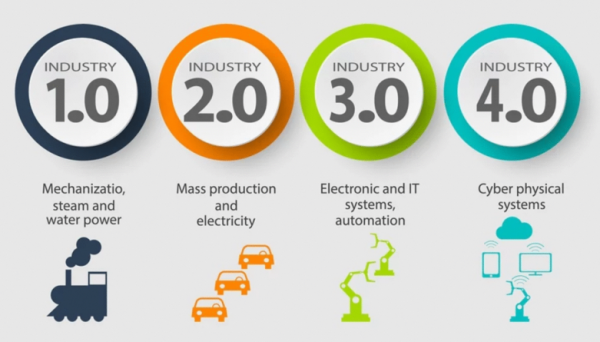
- Revolusi Industri 1.0
Pada revolusi industri pertama terjadi perubahan secara besar-besaran di bidang pertanian, manufaktur, pertambangan, transportasi dan teknologi.
Pada saat itu masih banyak pekerjaan yang mengandalkan tenaga manusia dan hewan meski banyak kendala yang cukup besar.
Tetapi setelah revolusi industri 1.0, semuanya berubah ketika ditemukannya sebuah alat penenun benang mekanik pada tahun 1784 oleh James Watt.
Hal ini menyebabkan tenaga manusia maupun tenaga hewan tidak lagi dibutuhkan yang mengakibatkan banyaknya pengangguran meski jumlah produksinya meningkat
begitu pula dengan moda transportasi, seperti transportasi laut yang awalnya mengandalkan angin, maka, dengan penemuan dgn mesin uap James Watt, kapal dapat
difungsikan dengan mengandalkan mesin uap.
Sumber : Sejarah dan perkembangan Revolusi Industri 1.0 hingga 4.0
-
Revolusi Industri 2.0
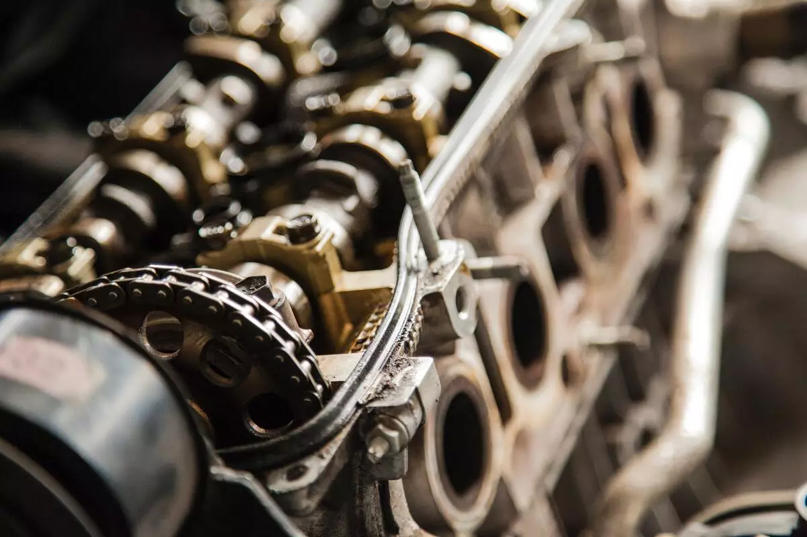
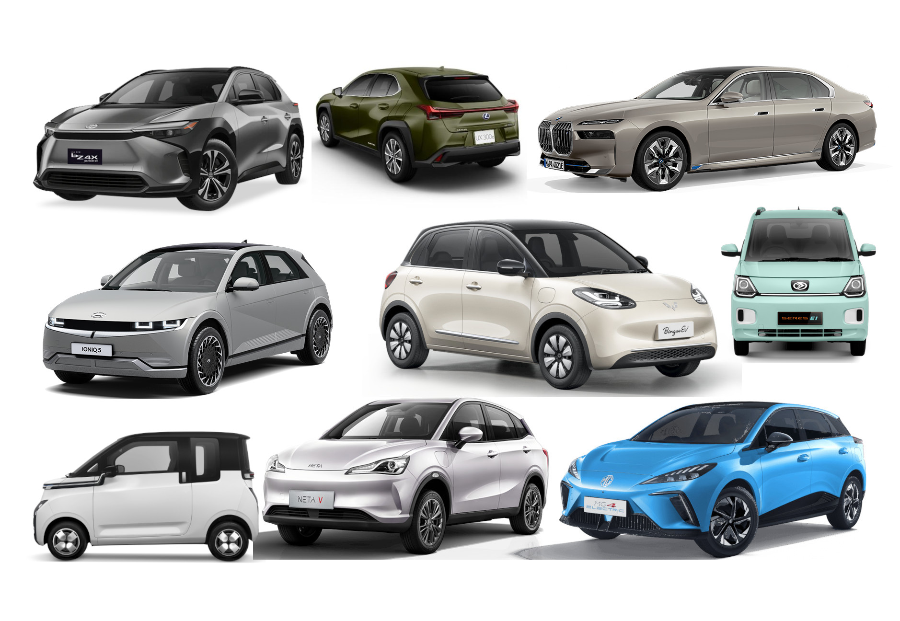
Revolusi industri 2.0 terjadi di awal abad ke-19 sampai abad ke-20 ditandai dengan munculnya listrik yang membuat hasil produksi jauh lebih murah daripada sebelumnya. Akan tetapi, kendala lain yang ditemukan pada masa tersebut, menyangkut masalah dalam proses produksi, yaitu pada bagian proses transportasi.
Guna mempermudah proses produksi di dalam pabrik yang biasanya cukup luas, dibutuhkan alat transportasi yang dapat mengangkut barang berat, seperti mobil sangat dibutuhkan. Sebelum masa revolusi industri 2.0 proses pengerjaan perakitan mobil hanya dilakukan di tempat yang sama.
Di tahun 1913 terciptanya sebuah Lini Produksi yang menggunakan ban berjalan. Penemuan tersebut mengakibatkan produksi mobil yang sebelumnya dirakit oleh banyak orang kini dapat diproduksi secara masal. Hal itu disebabkan, proses produksi diubah total dengan memberikan latihan kepada pekerja agar dapat bekerja menekuni satu bidang dan terorganisir sesuai dengan spesialisasinya, bekerja mengurus satu bagian saja.
Sumber : Sejarah dan perkembangan Revolusi industri 1.0 hingga 4.0
-
Revolusi Industri 3.0
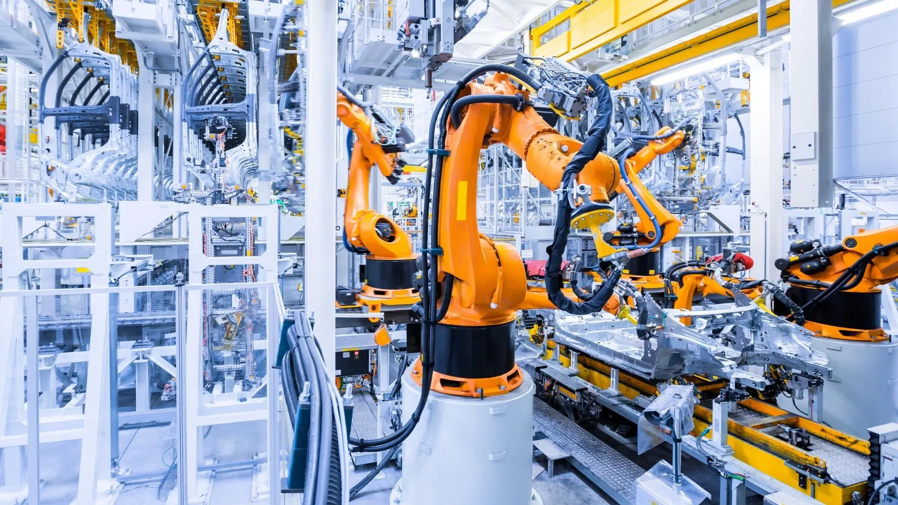
Penemuan pada revolusi 3.0 berupa mesin penggerak, yang dapat berpikir secara otomatis seperti komputer dan robot.
Pada masa revolusi ini, terciptanya teknologi komputer menjadi pertanda cikal bakal kemudahan pekerjaan. Jika revolusi sebelumnya masih dikendalikan oleh manusia, maka pada revolusi industri 3.0 sudah menggunakan sistem otomatisasi yang dikontrol oleh komputer.
Di samping itu, sistem komunikasi juga telah berubah menjadi teknologi digital sehingga penyebaran akses informasi semakin cepat. Hal inilah yang membuat revolusi 3.0 memiliki sebutan, yaitu revolusi digital.
Berbagai penemuan seperti semikonduktor, disusul transistor, dan integrated chip membuat ukuran komputer semakin kecil, kebutuhan konsumsi daya listrik semakin sedikit.
Sumber : Sejarah dan perkembangan Revolusi industri 1.0 hingga 4.0
-
Revolusi 4.0
Zaman revolusi industri 4.0 adalah tren di dunia industri yang menggabungkan teknologi otomatisasi dengan teknologi cyber. Era revolusi industri 4.0 telah menjadi topik perbincangan semua kalangan. Mulai dari pemerintah, masyarakat, bahkan perusahaan pun berusaha mengerahkan berbagai macam strategi untuk menghadapinya
Perubahan pada industri 4.0 telah mengembangkan teknologi berkelanjutan seperti internet, komputerisasi, microchip, internet of things (IoT), deep learning, kecerdasan buatan (artificial intelligence/AI), machine learning.
Hal yang pertama kali dirasakan dalam revolusi industri 4.0 adalah internet. Semua komputer tersambung ke sebuah jaringan raksasa. Fisik komputer makin kecil dan berubah menjadi sebesar genggaman tangan manusia. Kemampuan software semakin meningkat sehingga dapat merevolusi setiap proses mulai dari produksi hingga distribusi.
Sistem machine learning dapat mengumpulkan data historis sehingga terbentuk algoritma pada mesin pencarian.
Pengembangan IoT bersamaan dengan teknologi-teknologi baru seperti dalam bidang robotik, sains, dan lain sebagainya, membawa pengaruh yang cukup banyak bagi kehidupan di dunia. Banyak aktivitas seperti pekerjaan dan gaya hidup manusia yang berubah menjadi lebih praktis.
Contohnya teknologi yang belum pernah ada sebelumnya, seperti aplikasi ojek online, tarik tunai lewat ponsel, belanja lewat marketplace. Ojek online selain menjadi transportasi, pengembangan software dibuat berbagai macam fitur untuk tarik tunai, memesan makanan hingga menjadi kurir antar barang. Sama dengan ojek online, marketplace juga mengembangkan software sama seperti ojek online dengan penambahan fitur-fitur canggih yang bisa mempermudah aktivitas keseharian.
Sumber : Sejarah dan perkembangan Revolusi industri 1.0 hingga 4.0
Sumber
- Detikcom
- Nusantara Traisser
- Moladin
- SHA Surakarta
- DJKN
Kontak saya
-
Instagram : darryl_railfans
-
YouTube : Darryl Railfans